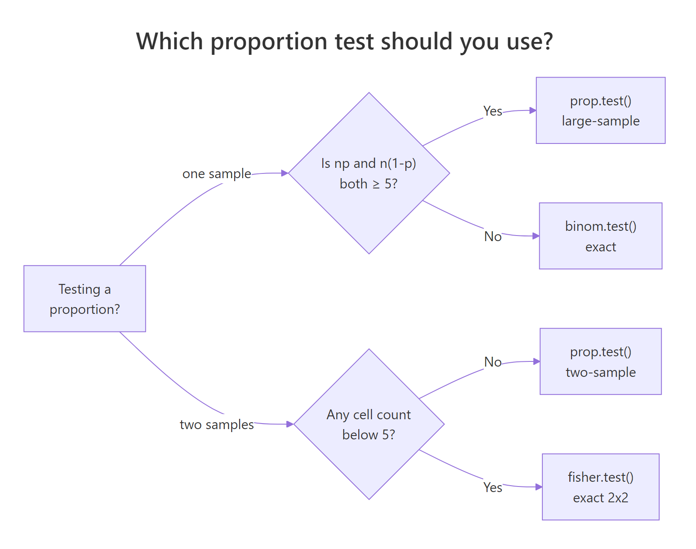
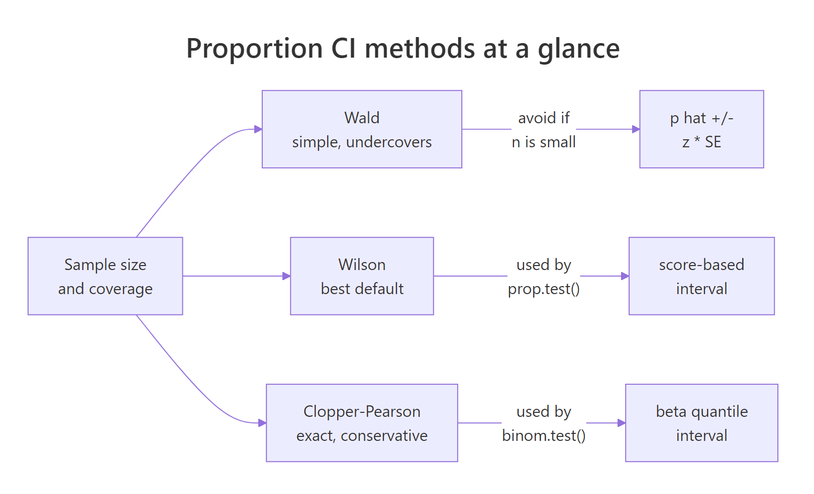
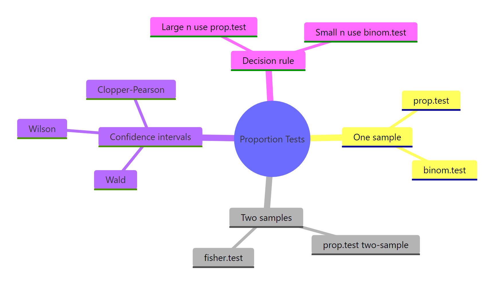

Proportion Tests in R: prop.test(), binom.test(), When to Use Each
A proportion test checks whether an observed rate, like a conversion rate or an infection rate, differs from a target value or from another group's rate. In R, prop.test() handles large samples with the normal approximation, and binom.test() returns exact p-values from the binomial distribution for small samples.
Which test should you use: prop.test() or binom.test()?
Pick the wrong one and your p-value lies. Imagine 2 successes in 15 trials and a null hypothesis that the true rate is 40%. The normal approximation behind prop.test() is shaky at this sample size, and the exact binom.test() is the honest answer. The rule of thumb is simple: when n is large and both n*p and n*(1-p) are at least 5, use prop.test(). Otherwise use binom.test(). Run both on the same data and compare.
Same data, same null, two different decisions at the 5% level. The exact binomial p-value is 0.036 (reject), while the continuity-corrected proportion-test p-value is 0.065 (fail to reject). When n is only 15, the continuous normal curve is a poor stand-in for the discrete binomial, and prop.test() inflates its p-value to be conservative. For small samples, the exact test is the one you should trust.

Figure 1: Pick prop.test() when the normal approximation is safe, binom.test() otherwise, and fisher.test() for sparse 2x2 tables.
prop.test() applies Yates continuity correction by default. That is why its p-value differs from a hand-computed Z-test. Pass correct = FALSE to turn it off and see the plain score test.Try it: Run both prop.test() and binom.test() on 30 successes out of 100 trials, testing the null p = 0.4. The two p-values should now be close, because n is large enough for the normal approximation.
Click to reveal solution
Explanation: At n = 100 both methods agree closely. The exact test rejects at 0.05 and the asymptotic test is right on the boundary. The Yates correction still pulls the asymptotic p-value upward, but the gap has shrunk to a few thousandths.
How do you run a one-sample proportion test?
A survey finds that 35 out of 100 adults favour a new policy. The historical baseline is 40%. Has opinion really shifted, or is 35% just sampling noise around 40%? A one-sample proportion test is exactly this question.
The call to prop.test() takes three arguments: x is the count of successes, n is the sample size, and p is the hypothesised population proportion. R returns a chi-square statistic (the squared Z), a p-value, and a 95% confidence interval.
The p-value is 0.36, well above 0.05, so we fail to reject the null: the data are consistent with a true rate of 40%. The 95% CI runs from 26% to 45% and contains 40%, which tells the same story visually. Reading $estimate gives the raw proportion 0.35, and $conf.int returns the bounds as a two-element vector you can pull into a report.
alternative = "less" or "greater" for one-sided tests.* If the policy hypothesis was specifically that support has dropped* below 40%, prop.test(35, 100, 0.40, alternative = "less") halves the p-value and returns a one-sided CI.Try it: Test whether 55 heads out of 100 coin flips is significantly different from a fair coin (p = 0.5). Save the test object to ex_coin and pull the p-value.
Click to reveal solution
Explanation: 55 heads in 100 flips is within a normal range of variation for a fair coin. The 95% CI includes 0.5, and we do not reject the null.
How do you compare two proportions in R?
Two-sample proportion tests answer "do these two groups really differ?" An A/B test is the classic case: 48 conversions in 500 visitors on the control page, 70 conversions in 500 visitors on the variant. The variant looks better at face value (14% vs 9.6%), but is the lift real?
Passing vectors of length 2 to x and n tells prop.test() you want the two-sample version. It returns a chi-square, a p-value for H0: p1 = p2, and a CI for the difference p1 - p2.
The p-value is 0.040, so at the 5% level we reject the null of equal rates. The 95% CI for p1 - p2 runs from -0.086 to -0.002 and excludes zero, which is the same conclusion in interval form: the variant's rate is higher by somewhere between 0.2 and 8.6 percentage points. The point estimates prop 1 = 9.6% and prop 2 = 14.0% give the raw lift of 4.4 points.
A p-value alone rarely settles a business question. Reporting the size of the difference and the relative change makes the result decision-ready.
The variant beats control by 4.4 percentage points on an absolute scale and lifts the conversion rate by 46% on a relative scale. Pair this with the CI on the difference to check whether even the worst-case lift is worth the engineering and rollout cost.
Try it: Compare 15 defects out of 200 from supplier A against 10 defects out of 250 from supplier B. Report the p-value and the risk difference (A minus B).
Click to reveal solution
Explanation: Supplier A has a 7.5% defect rate, supplier B has 4%. The raw difference is 3.5 points, but the p-value is 0.16 and the 95% CI for the difference crosses zero. The sample sizes are too small to conclude the suppliers really differ.
When does the p-value stop being trustworthy?
The normal approximation behind prop.test() assumes the sampling distribution of p_hat is bell-shaped. For large n this is roughly true. For small n or extreme p, the true distribution is discrete and skewed, and the approximation drifts away from reality. The practical symptom is a p-value that does not match the one from the exact test, and in close calls it changes your decision.
The cleanest way to see this is to compare p-values across every possible outcome at small n. For n = 10 under null p = 0.3, each possible success count x produces a different pair of p-values from the two tests.
Look at x = 0: the exact p-value is 0.039 (reject at 0.05) but the asymptotic p-value jumps to 0.084 (do not reject). At x = 4, the exact says 0.500 and the asymptotic says 0.730, a 46% gap. In any real-world decision around the 0.05 boundary, this swing determines whether you call the result significant. The prop.test() result is not wrong, it is just solving a different problem, and that problem's answer happens to disagree with the exact one when the normal curve is a bad model for this particular binomial.
A compact decision rule captures when to bail out of the asymptotic world. The minimum of expected successes and expected failures under the null should be at least 5.
use_exact() returns TRUE when the normal approximation is unsafe. For n = 15, p = 0.10 the expected successes under the null is 1.5, which is far below 5, so we switch to binom.test(). For n = 200, p = 0.30 the expected counts are 60 and 140, well past the threshold, and prop.test() is fine. When both counts are borderline (between 5 and 10), running both tests and checking that they agree is the safest move.
prop.test() p-value without checking the sample size is a silent bug. The function happily returns a p-value for x = 1, n = 10, but it can disagree with the exact p-value by a factor of two. Always compute min(n * p0, n * (1 - p0)) first and fall back to binom.test() when it is under 5.Try it: For n = 25 and a null proportion p = 0.08, does the rule of thumb say to use the exact test or the asymptotic test?
Click to reveal solution
Explanation: Expected successes under the null are 25 * 0.08 = 2, which is well under 5, so the normal approximation is unreliable. Use binom.test() here.
Which confidence interval should you report?
The CI that ships with your proportion is as important as the point estimate. R gives you three main choices and they disagree, sometimes noticeably. Here is the short version.
- Wald is the textbook
p_hat +/- 1.96 * SEinterval. It is easy to compute by hand but biased toward the centre and can even produce nonsensical negative lower bounds whenpis near 0. Avoid it except for pedagogy. - Wilson is the default CI from
prop.test(correct = FALSE). It inverts the score test, behaves well for anyn, and is the best general-purpose choice. - Clopper-Pearson is the default CI from
binom.test(). It is exact (coverage is guaranteed to be at least the nominal level), which means it is a touch conservative and slightly wider.
All three can be written in a few lines of base R. Compute them side by side for x = 7, n = 50.
The three formulas are:
Wald:
$$\hat{p} \pm z_{1-\alpha/2} \sqrt{\frac{\hat{p}(1-\hat{p})}{n}}$$
Wilson (score):
$$\frac{\hat{p} + \frac{z^2}{2n} \pm z \sqrt{\frac{\hat{p}(1-\hat{p})}{n} + \frac{z^2}{4n^2}}}{1 + \frac{z^2}{n}}$$
Clopper-Pearson: the 2.5th percentile of Beta(x, n-x+1) and the 97.5th percentile of Beta(x+1, n-x).
Where $\hat{p} = x/n$ is the sample proportion, $n$ is the sample size, $z$ is the normal quantile (1.96 for 95%), and $x$ is the number of successes.
For 7 successes out of 50, the three CIs are Wald (0.044, 0.236), Wilson (0.070, 0.262), and Clopper-Pearson (0.058, 0.267). The Wald lower bound is more than two percentage points below Wilson's, which looks harmless at this sample size, but at smaller n Wald can go negative. Clopper-Pearson is wider on both sides because it guarantees coverage rather than targeting it. Wilson sits in the middle and is what you should report by default.
The prop.test() CI with correct = FALSE matches the Wilson interval to the fourth decimal, and binom.test()'s CI matches Clopper-Pearson exactly. That is not coincidence, those functions are implementations of the Wilson and Clopper-Pearson methods. Knowing this lets you pick a function by the CI you want, not just by the p-value.

Figure 2: Wald is simple but undercovers; Wilson (prop.test() default) is the best general-purpose choice; Clopper-Pearson (binom.test() default) is exact and conservative.
p, while Clopper-Pearson sacrifices a little width for a rock-solid guarantee. Wald is a teaching tool, not a reporting tool.Try it: For x = 2 successes out of n = 20 trials, compute and report both the Wilson and the Clopper-Pearson 95% CI.
Click to reveal solution
Explanation: At x = 2, n = 20, the expected successes is 2, far below 5, so the exact method is more appropriate. Notice how much wider Clopper-Pearson is on the lower side. It protects against the worst case of an unusually small sample.
Practice Exercises
Exercise 1: A survey at the boundary
A survey returns 112 positive responses out of 250. Test whether the true rate is 50% using prop.test(), report the 95% Wilson CI, and state whether you reject the null at alpha = 0.05. Save the test object to my_survey.
Click to reveal solution
Explanation: The observed rate is 44.8%. The p-value is 0.10, and the 95% Wilson CI (0.388, 0.510) covers 0.5, so we fail to reject the null. The true proportion is plausibly 50%.
Exercise 2: Small-sample vaccination cohorts
Compare infection rates between two small cohorts: 3 infections in 40 vaccinated people versus 9 in 40 unvaccinated people. Pick the correct test given the cell counts, report the p-value, and compute the risk difference (unvaccinated minus vaccinated).
Click to reveal solution
Explanation: The risk difference is 15 percentage points, but the p-value is 0.11 because both cohorts are small. With only 40 people per group, even large absolute differences fail to reach conventional significance. This is a power problem, not a signal problem, and is exactly why sample size planning matters.
Exercise 3: Build a smart wrapper
Write a function pt_summary(x, n, p0 = 0.5) that picks binom.test() when min(n*p0, n*(1-p0)) < 5, otherwise prop.test() with correct = FALSE. The function should return a named list with the test used, p-value, estimate, and 95% CI. Test it on two cases: (x = 2, n = 15, p0 = 0.2) and (x = 40, n = 100, p0 = 0.5).
Click to reveal solution
Explanation: The first call routes to binom.test() because 15 * 0.2 = 3 is below the threshold. The p-value of 0.75 means the observed 2/15 is essentially consistent with 0.2. The second call routes to prop.test() because both expected counts are 50, and it rejects the null at 0.05. One wrapper, two correctly-chosen tests.
Complete Example: measuring a marketing lift end to end
A two-week A/B test on a landing page gives 18 signups from 400 control visitors and 32 signups from 400 treatment visitors. You want to know three things: is the lift real, how big is it, and does the CI lower bound clear the 1-point threshold your product lead set.
The p-value of 0.041 rejects the null of equal rates at the 5% level. The point estimate of the lift is 3.5 percentage points, and the 95% CI for the lift runs from 0.15 to 6.85 percentage points. The lower bound is 0.15, well below the 1-point business threshold, so while the lift is statistically real it is not confidently large enough to meet the product lead's bar. The honest decision is to run the test longer to tighten the CI, not to ship the variant on this evidence alone.
Summary
Proportion tests in R come down to a few decisions: which function to call, whether to apply the Yates continuity correction, and which confidence interval to report. The table below is the full map.
| Question | Function | Notes |
|---|---|---|
One sample, large n |
prop.test(x, n, p) |
Score test; Wilson CI when correct = FALSE |
One sample, small n |
binom.test(x, n, p) |
Exact p-value; Clopper-Pearson CI |
| Two samples, both cells >= 5 | prop.test(c(x1, x2), c(n1, n2)) |
CI is for p1 - p2 |
| Two samples, any cell < 5 | fisher.test(matrix(...)) |
Exact 2x2 test |
| Default CI | Wilson | Via prop.test(correct = FALSE) |
| Exact CI | Clopper-Pearson | Via binom.test() |

Figure 3: Overview of R's proportion-testing toolkit.
Three takeaways to commit to memory. First, the sample size rule min(n*p, n*(1-p)) >= 5 decides whether the asymptotic test is trustworthy. Second, always accompany a p-value with a CI for the difference or the estimate, because the CI carries the effect size you need for a real decision. Third, Wilson is the default CI; reach for Clopper-Pearson only when you need strict coverage.
References
- R Core Team. *
prop.test: Test of Equal or Given Proportions.* R manual. Link - R Core Team. *
binom.test: Exact Binomial Test.* R manual. Link - Agresti, A. and Coull, B. A. (1998). Approximate Is Better than Exact for Interval Estimation of Binomial Proportions. The American Statistician, 52(2), 119-126.
- Clopper, C. J. and Pearson, E. S. (1934). The use of confidence or fiducial limits illustrated in the case of the binomial. Biometrika, 26(4), 404-413.
- Wilson, E. B. (1927). Probable inference, the law of succession, and statistical inference. Journal of the American Statistical Association, 22(158), 209-212.
- Newcombe, R. G. (1998). Two-sided confidence intervals for the single proportion: comparison of seven methods. Statistics in Medicine, 17(8), 857-872.
- Brown, L. D., Cai, T. T. and DasGupta, A. (2001). Interval estimation for a binomial proportion. Statistical Science, 16(2), 101-133.
Continue Learning
- Hypothesis Testing in R, the framework behind every test in this post, including Type I and Type II errors and why a p-value is not a probability of being wrong.
- Confidence Intervals in R, the definition most textbooks state incorrectly, with intuition for what the 95% really means.
- t-Tests in R, the mean-comparison counterpart to this post, with the same style of decision rules for picking the right variant.